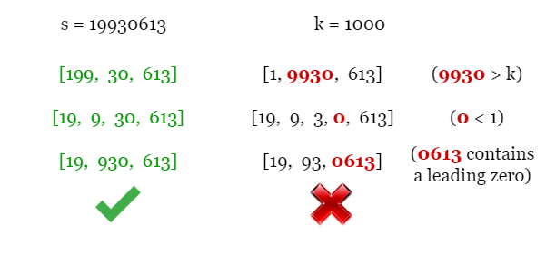
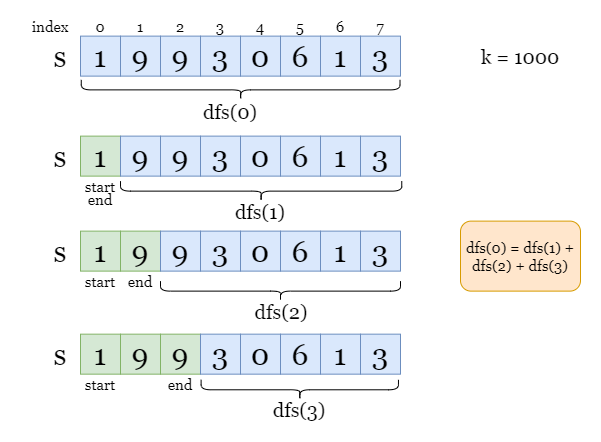
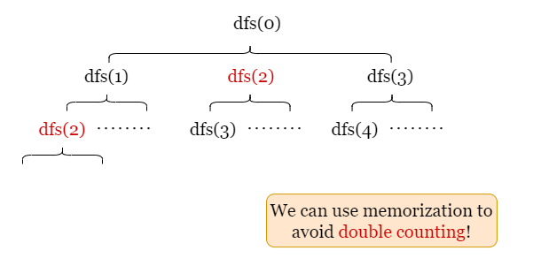
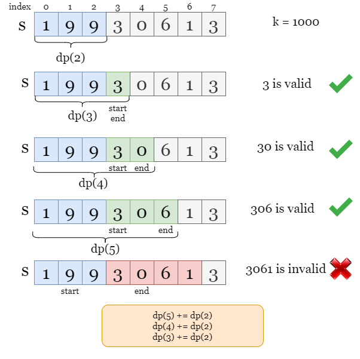
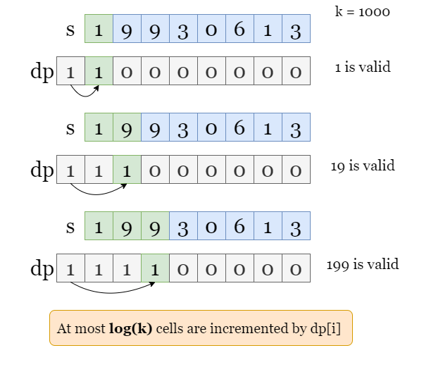
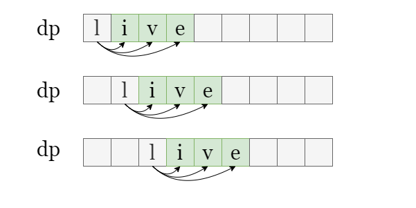
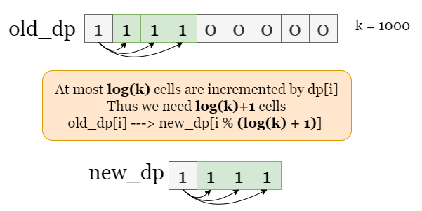
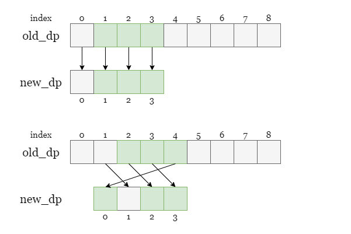

For example, we have s = 19930613 and k = 1000. Some of the valid arrays are colored in
green because they can be printed as s. However, the red arrays are invalid since they either contain
leading zeros or are invalid integers.

In order to find all arrays that can be printed as the entire string s, we can start with finding all
possible first integers, as shown in the picture below, we find 3 possible first integers, 1,
19, and 199. For each case, we can continue moving on to the remaining substring and solve
the subproblems and so on. The tree-like structure of this problem implies that we can use the depth-first-search
method to solve it.
Suppose the size of the input string is m, let dfs(x) be the number of arrays for the
suffix substring s[x ~ m - 1].

Write the process in the picture above:
If we let 1 be the first number, then we shall look for dfs(1), the number of
arrays that can be printed as s[1 ~ m - 1].
If we let 19 be the first number, then we shall look for dfs(2), the number of
arrays that can be printed as s[2 ~ m - 1].
If we let 199 be the first number, then we shall look for dfs(3), the number of
arrays that can be printed as s[3 ~ m - 1].
In conclusion, the above observation can be rewritten as dfs(0) = dfs(1) + dfs(2) + dfs(3). We can move
on to dfs(1) and solve this subproblem, then move on to dfs(2), and so on, we will handle
all subproblems before getting dfs(0).
However, there might be repeated computation, we can use an auxiliary array dp as memory to avoid double
counting. We update dp[x] = dfs(x) immediately after getting the value of dfs(x), so we
don't need to recalculate dfs(start) later.

The recursion stops when we reach base cases below, we can just return the corresponding value:
If the digit s[start] equals 0, it means we can't find any valid array since
leading zeros are not allowed. Return 0.
If the index start equals m (the length of s), it means we are looking
for the number of arrays that can be printed as an empty string. Only the empty array works, so we return
1.
Create an array dp of size m + 1, to store the value of dfs(x).
To get the value of dfs(start), if a non-zero dp[start] exists, it means we have
already got its value, return dp[start]. Otherwise:
s[start] == 0, return 0.start = m, return 1.count = 0, the number of valid arrays.end by iterating over indexes from
start. If s[start ~ end] represents a valid integer, we continue looking for
the subproblem dfs(end + 1) and update count as count += dfs(end +
1).
dp[start] as dfs(start).Return dfs(0).
Java
class Solution {
int mod = 1_000_000_007;
// Number of possible splits for substring s[start ~ m-1].
private int dfs(int[] dp, int start, String s, int k) {
// If we have already updated dp[start], return it.
if (dp[start] != 0)
return dp[start];
// There is only 1 split for an empty string.
if (start == s.length())
return 1;
// Number can't have leading zeros.
if (s.charAt(start) == '0')
return 0;
// For all possible starting number, add the number of arrays
// that can be printed as the remaining string to count.
int count = 0;
for (int end = start; end < s.length(); ++end) {
String currNumber = s.substring(start, end + 1);
if (Long.parseLong(currNumber) > k)
break;
count = (count + dfs(dp, end + 1, s, k)) % mod;
}
// Update dp[start] so we don't recalculate it later.
dp[start] = count;
return count;
}
public int numberOfArrays(String s, int k) {
int m = s.length();
int[] dp = new int[m + 1];
return dfs(dp, 0, s, k);
}
}
Python3
class Solution:
def numberOfArrays(self, s: str, k: int) -> int:
m, n = len(s), len(str(k))
mod = 10 ** 9 + 7
dp = [0] * (m + 1)
# Number of possible splits for s[start ~ m-1].
def dfs(start):
# If we have already updated dp[start], return it.
if dp[start]:
return dp[start]
# There is only 1 split for an empty string.
if start == m:
return 1
# Number can't have leading zeros.
if s[start] == '0':
return 0
# For all possible starting number, add the number of arrays
# that can be printed as the remaining string to count.
count = 0
for end in range(start, m):
curr_number = s[start: end + 1]
if int(curr_number) > k:
break
count += dfs(end + 1)
# Update dp[start] so we don't recalculate it later.
dp[start] = count % mod
return count
return dfs(0) % mod
Let mm
be the length of the input string s.
Time complexity: O(m⋅logk)O(m \cdot \log k)
We create dp of length m + 1 for memory, it takes O(m)O(m)
steps to update them.
At each step s[start], we look for all possible ending index end. In the
worst-case scenario, we will iterate over logk\log k indexes before currNumber
is larger than k, because each iteration increases currNumber by a
magnitude.
To sum up, the overall time complexity is O(m⋅logk)O(m \cdot \log k).
Space complexity: O(m)O(m)
dp of length m + 1.We can also solve this problem iteratively. That is, to solve the subproblem first, then move on to larger problems.
Similarly, we let dp[i] be the number of arrays for the prefix substring s[0 ~ i], we will
iterate over every index before getting dp[m - 1]. Suppose we have found dp[start - 1].
Then we move on to the index start and iterate for the ending index end and check if the
integer made of s[start ~ end] is valid. If s[start ~ end] represents a valid integer, it
means every valid array that can be printed as s[0 ~ start - 1] can also be printed as s[0 ~
end] by appending the integer s[start ~ end], so we increment dp[end] by dp[start
- 1].
As shown in the picture below, imagine that we have found dp[2].
s[3 ~ 3] = 3 is a valid number, it means every array that can be printed as s[0 ~ 2]
can also be printed as s[0 ~ 3] by appending 3.
s[3 ~ 4] = 30 is a valid number, it means every array that can be printed as s[0 ~ 2]
can also be printed as s[0 ~ 4] by appending 30.
s[3 ~ 5] = 306 is a valid number, it means every array that can be printed as s[0 ~ 2]
can also be printed as s[0 ~ 5] by appending 306.

We create an array dp as memory where dp[i] stores the number of arrays that can be printed
as the prefix string s[0 ~ i-1]. Initialize dp[0] = 1 as there is one array (empty array)
that can be printed as an empty string.
Back to the example above, suppose we have updated dp[3].
s[3 ~ 3] = 3 is a valid number, so we update dp[4] += dp[3].s[3 ~ 4] = 30 is a valid number, so we update dp[5] += dp[3].s[3 ~ 5] = 306 is a valid number, so we update dp[6] += dp[3].Once we finish the iteration, dp[m] is the number of arrays that can be printed as the entire string
s.
Let m be the size of input string s. We create an array dp of size
m + 1. Set dp[0] = 1.
Iterate over each starting index start. If s[start] = 0, repeat step 2 and move on
to the next index. Otherwise:
end from start.s[start ~ end] is valid, increment dp[end + 1] by
dp[start].
Return dp[m + 1] when the iteration ends.
Java
class Solution {
public int numberOfArrays(String s, int k) {
int m = s.length(), n = String.valueOf(k).length();
int mod = 1_000_000_007;
// dp[i] records the number of arrays that can be printed as
// the prefix substring s[0 ~ i - 1]
int[] dp = new int[m + 1];
// Empty string has 1 valid split.
dp[0] = 1;
// Iterate over every digit, for each digit s[start]
for (int start = 0; start < m; ++start) {
if (s.charAt(start) == '0')
continue;
// Iterate over ending digit end and find all valid numbers
// s[start ~ end].
for (int end = start; end < m; ++end) {
String currNumber = s.substring(start, end + 1);
if (Long.parseLong(currNumber) > k)
break;
// If s[start ~ end] is valid, increment dp[end + 1] by dp[start].
dp[end + 1] = (dp[end + 1] + dp[start]) % mod;
}
}
return dp[m];
}
}
Python3
class Solution:
def numberOfArrays(self, s: str, k: int) -> int:
m, n = len(s), len(str(k))
mod = 10 ** 9 + 7
# dp[i] records the number of arrays that can be printed as
# the prefix substring s[0 ~ i - 1]
dp = [1] + [0] * m
# Iterate over every digit, for each digit s[start]:
for start in range(m):
if s[start] == '0':
continue
count = 0
# Iterate over ending digit end and find all valid numbers
# s[start ~ end].
for end in range(start, m):
curr_number = s[start:end + 1]
if int(curr_number) > k:
break
# If s[start ~ end] is valid, increment dp[end + 1] by dp[start].
dp[end + 1] += dp[start]
dp[end + 1] %= mod
return dp[-1]
Let mm
be the length of the input string s.
Time complexity: O(m⋅logk)O(m \cdot \log k)
We create dp of length m + 1 as memory, it takes O(m)O(m)
steps to update them.
At each iteration step s[start], we look for all possible ending index end.
In the worst-case scenario, we have to traverse logk\log k indexes before currNumber
is larger than k. This is because each iteration increases currNumber by a
magnitude.
To sum up, the overall time complexity is O(m⋅logk)O(m \cdot \log k).
Space complexity: O(m)O(m)
dp of size m + 1.In approach 2, we create an array dp of size m + 1. At each iteration step for the ending
index s[end], we increment dp[end + 1] by dp[start]. Each iteration over
end increases the current integer made by s[start ~ end] by a magnitude, thus there are at
most (logk)(\log k) cells we need to update before the integer exceeds
k.
The question is, can we reduce the size of dp if only part of it ((logk)(\log k)) are used each time?

As shown in the picture below, at most logk\log k cells are updated
at each step. Once we pass the starting index start and move on to the next starting index start
+ 1, we will never need the value of dp[start] anymore. This implies that we don't need to
store the entire dp as we did in approach 2. Instead, we can use less space by only maintaining a 'live
window' of size logk+1\log k + 1.

We can create new_dp of size logk+1\log k + 1. For
distinction, let's call the previous array old_dp. Since the new_dp might be shorter than
s, whenever we need to update new_dp[x] as we did for old_dp[x], we can get
the remainder of the index x for modulo logk+1\log k + 1
as x % (logk+1)x\ \% \ (\log k + 1) and update new_dp[x % (logk+1)]\text{new\_dp} [x\ \% \ (\log k + 1)] to avoid the case of index
out of range.

In the example below, the size of 'live' window is 4. If we move to the next starting index
1, new_dp[0] will represent old_dp[4].

Before we move on to the next starting index start + 1, we need to reset the value representing the
current starting index start as 0, that is, new_dp[start % (logk+1)]=0\text{new\_dp} [\text{start}\ \% \ (\log k + 1)] = 0.
The reasons are as we said before:
Once we pass the index
startand move on to the next index, we will never need the value ofdp[start]anymore.
Thus new_dp[start % (logk+1)]\text{new\_dp} [\text{start}\ \% \ (\log k + 1)] doesn't represent the cell old_dp[start]\text{old\_dp} [\text{start}] anymore, but the cell with a larger index old_dp[start+logk+1]\text{old\_dp} [\text{start} + \log k + 1], so we need to reset it as 0 and update it in
the further steps.
We create an array dp of size log k + 1. Set dp[0] = 1.
Iterate over each starting index start. If s[start] = 0, set dp[start % (log
k + 1)] as 0. Repeat step 2 and move on to the next index. Otherwise:
end from start.s[start ~ end] is valid, increment dp[(end + 1) % (log k
+ 1)] by dp[start % (log k + 1)].
dp[start % (log k + 1)] as 0.Return dp[(m + 1) % (log k + 1)] when the iteration ends.
Java
class Solution {
public int numberOfArrays(String s, int k) {
int m = s.length(), n = String.valueOf(k).length();
int mod = 1_000_000_007;
// dp[i % (n + 1)] stands for the number of splits for substring s[0 ~ i - 1]
int[] dp = new int[n + 1];
// Empty string has 1 valid split.
dp[0] = 1;
// Iterate over every digit, for each digit s[start]
for (int start = 0; start < m; ++start) {
if (s.charAt(start) == '0') {
dp[start % (n + 1)] = 0;
continue;
}
// We travers forward to find all valid numbers s[start ~ end].
for (int end = start; end < m; ++end) {
String currNumber = s.substring(start, end + 1);
if (Long.parseLong(currNumber) > k)
break;
// If s[start ~ end] is valid, increment dp[(end + 1) % (n + 1)] by dp[start].
dp[(end + 1) % (n + 1)] = (dp[(end + 1) % (n + 1)] + dp[start % (n + 1)]) % mod;
}
// Set dp[start % (n + 1)] as 0.
dp[start % (n + 1)] = 0;
}
return dp[m % (n + 1)];
}
}
Python3
class Solution:
def numberOfArrays(self, s: str, k: int) -> int:
m, n = len(s), len(str(k))
mod = 10 ** 9 + 7
# dp[i % (n + 1)] records the number of arrays that can be printed as
# the prefix substring s[0 ~ i - 1]
dp = [1] + [0] * n
# Iterate over every digit, for each digit s[start]:
for start in range(m):
if s[start] == '0':
dp[start % (n + 1)] = 0
continue
# Iterate over ending digit end and find all valid numbers
# s[start ~ end].
for end in range(start, m):
if int(s[start : end + 1]) > k:
break
# If s[start ~ end] is valid, increment dp[(end + 1) % (n + 1)] by dp[start].
dp[(end + 1) % (n + 1)] += dp[start % (n + 1)]
dp[(end + 1) % (n + 1)] %= mod
# Set dp[start % (n + 1)] as 0.
dp[start % (n + 1)] = 0
return dp[m % (n + 1)]
Let mm
be the length of the input string s.
Time complexity: O(m⋅logk)O(m \cdot \log k)
It takes O(m)O(m)
steps to iterate over string s.
At each iteration step s[start], we will look for all possible ending index
end. In the worst-case scenario, we have to traverse logk\log k indexes before currNumber
is larger than k. This is because each iteration increases currNumber by a
magnitude.
To sum up, the overall time complexity is O(m⋅logk)O(m \cdot \log k).
Space complexity: O(logk)O(log k)
dp of size (logk)(\log k).